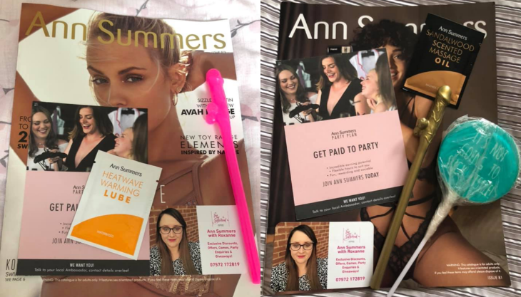
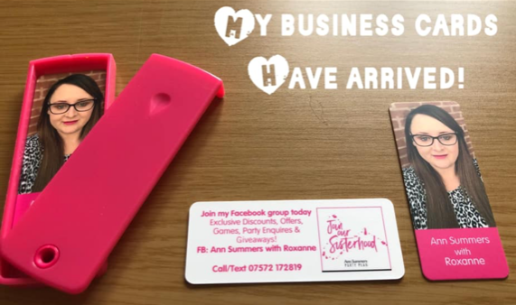
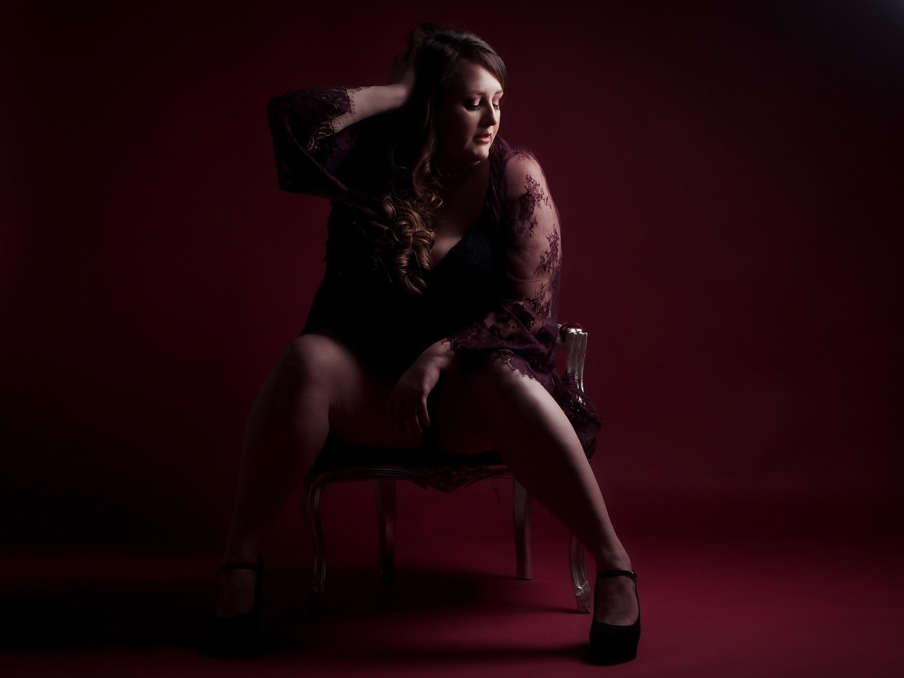
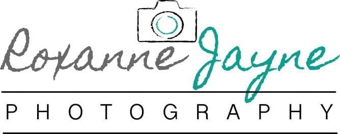
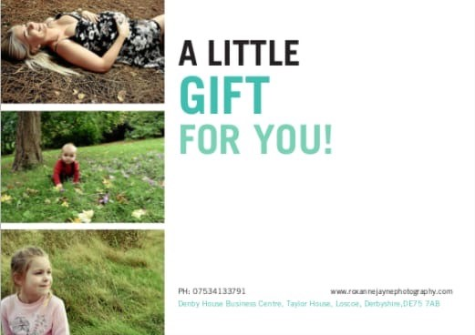
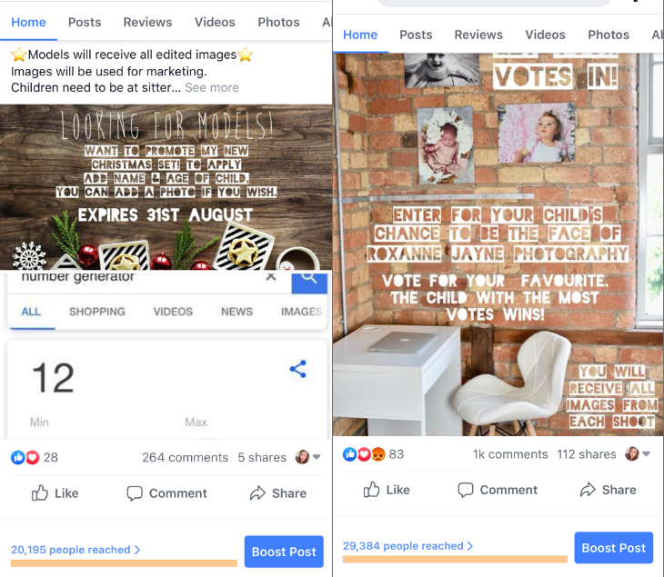
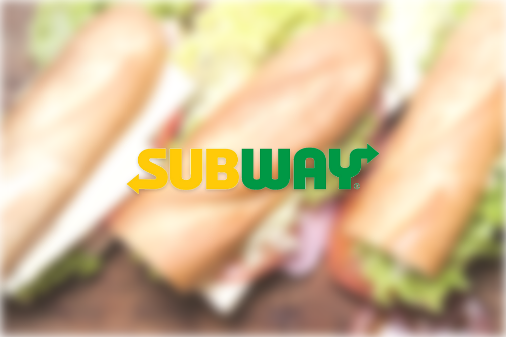

During my time working as an Ann Summers Rep I ran a number of marketing campaigns; online and offline. Below are examples of some of my work and my thought process.
Part of the role would be to get an online catalogue or a paper copy to your target audience/customer. Being creative and also keeping in mind of ROI, I put together a promotional pack for new customers. If you want your customers to buy from you then they need a ‘why’. I chose to be the face of the brand by attaching a personalised sticker, half of this being a photo of me. I did this as there are many reps selling Ann Summers, I wanted to stand out from the crowd as being unique and personal. Then I included some low-cost freebies to give an incentive to these new customers.

Going back to keeping the brand personal, I kept this concept in mind when creating the business cards. I chose to put a portrait photo of myself which took up 70% of the front of the business cards. Also, my name plays a big role, making it again personal. On the back of the business cards I have kept to the same branding; hot pink and white which is the typical Ann Summers colours. I have detailed why to join my Facebook group which is where I would mainly post a mixture of; discounts, games, information and also giveaways. My contact number is present, giving the option to contact me directly.
Once my business cards arrived, I posted this photo on Facebook and also posted it on the Ann Summers Rep page. I was inundated with comments and likes, asking where I made them and that it was such a good idea. I am a team player and would often share my ideas with the other reps. I negotiated a referral scheme with the company who I bought the business cards from and got £10 for each new customer that I referred. I often make b2b relationships, another example is detailed below.

Always looking outside of the box and utilising my skill set in forming 3rd party b2b relationships, I contacted Firefly Photography and agreed some joint business development. They provided me with a full photo shoot and all edited images, so that I could showcase the Ann Summers lingerie and I modelled it. I then posted these images on the Facebook group. Being plus sized, I got great feedback, and this increased sales. Also, I referred lots of customers to Firefly for photoshoots of their own. Being a team player, I shared my images to other Ann Summers Reps.

Having a love for photography and being business minded, I set up my own photography business. I headed up the marketing and below are some examples of the campaigns I ran and some marketing material I put together.

I designed the logo above, I wanted a friendly, personal touch but also wanted it to be clean and business looking.
Below is an example of the gift card I created. My target audience was; bumps, new-born’s, children and families and this is why I chose these images. The blank space is so that the customer could write on the gift card and it came with an envelope. I chose the text as it matched my logo which is on the reverse of this gift card and you can see an example of this at the top of this page.

Below are the two campaigns that reached the most people with no paid advertising.
The first advert (left) reached 20,195 people. ‘Model call outs’ are always a success as the comments, tags and shares are high. Everyone wants something for free so it gets lots of traction. Taking ROI into account, I give one photosession away worth RRP £50. However because of the social media engagement, on average I have 5 bookings from new customers. They spread the word off mouth etc and that figure increases again.
The second advert (right) reached 29,384 people. Similar to the ‘model call out’ however I was looking for a child to be the face of my brand. The reason this reached more people. I also asked people to vote for their favourite child which increased the comments, likes and shares further.

I managed 3rd party b2b business relationships. I had a make-up and hair artist who I would use for clients and they would also recommend me to their clients also.
I also did offline marketing materials such as business cards and flyers. These kept within the branding of the company and were similar to the gift card example further up.
I designed, managed and continually updated the website. I kept it looking clean, fresh and professional. (www.roxannejaynephotography.com)
While working at Subway I was a Sales and Marketing Assistant and a Shift Manager.
My role as a Shift Manager was to lead the team and ensure all staff were working to their best potential. I would describe myself as approachable and a real team player. I would train new staff as well as training current staff on new product roll outs.

As a Sales and Marketing Assistant, my key achievements were building a B2B relationship with 3 local gyms (Snap fitness in our retail park, Shreadz and Evisa) It was my idea to give the gyms promotional key rings, which they could use as an incentive to their gym members. They also handed out our promotional leaflets and in return we handed out theirs to our customers. I also targeted local slimming world groups and gave them the promotional key rings too.
Our Subway branch noticed that the result of this cross marketing was a success as it boosted sales and we noticed that our quieter times were busier. I noticed that it wasn’t just gym members and slimming world members, but they brought along their friends and families too which increased sales further.